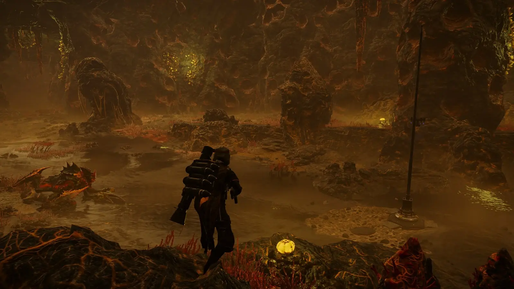
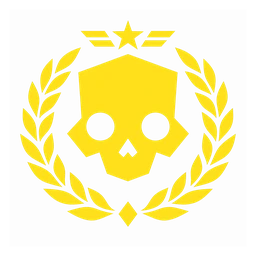
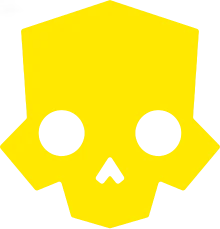
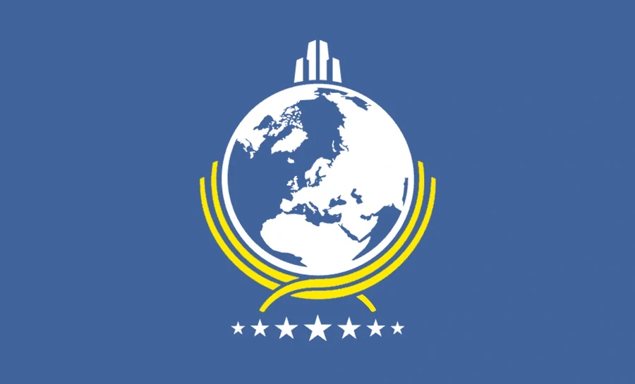
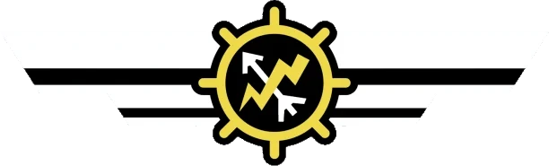
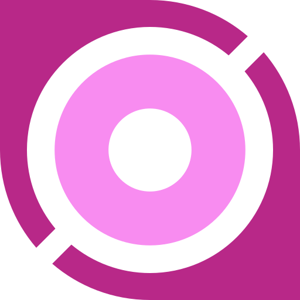
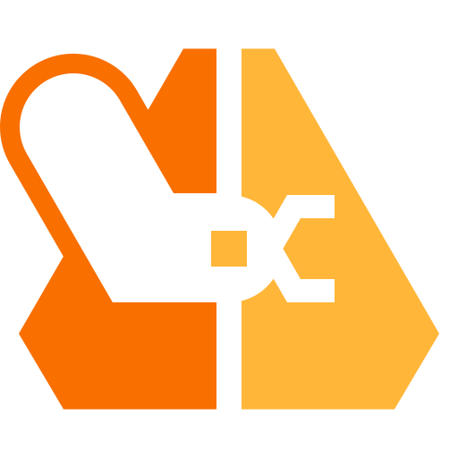

Candidate 1 · in use
Crest
Skull, laurel wreath, star and chevrons, diamond. Gold on black. Reads at 34 px, which is the test the nav sets.

One page for everything about the logo: the mark in use right now, where it appears and at what size, the candidates on the table, the marks it replaced, and the in-game emblems it borrows from. Facts about the game's own emblems are marked; the rest is our brand decisions.
Chosen 13 Sep 2026 ("use this as the logo for now"). Helldivers skull inside a laurel wreath, a star and chevrons above, a diamond below. Supplied as a 1254 px square on black; cut to a transparent mark by luminance keying.

| Where | File | Size | Notes |
|---|---|---|---|
| Navigation, every page | assets/img/brand/crest.webp | 34 × 34 px, 256 px source | Injected by core.js as MARK, so it is identical everywhere. Was the official skull at 30 × 31. |
| Browser tab | assets/img/brand/favicon.png | 64 px | Replaced the inline SVG skull on all 16 pages. |
| Home screen, iOS | assets/img/app/icon-180.png | 180 px on #080A0E | 6 percent margin. |
| Home screen, Android and PWA | assets/img/app/icon-192.png, icon-512.png | 192 and 512 px on #080A0E | Listed in manifest.webmanifest. |
| Maskable icon | assets/img/app/icon-512-maskable.png | 512 px, 18 percent safe margin | Android masks the corners; the wreath stays inside the circle. |
| Build card PNG | assets/meta.js buildCard() | 1200 × 720 | Text lockup only, no mark yet. Open item. |
| Source | assets/img/brand/crest-512.png | 512 px transparent | Regenerate the rest from this; the 1254 px original is in the chat, not the repo. |
Two more marks arrived on 13 Sep after the crest. Both put the skull over the Super Earth globe. Their files have not reached the repo yet, so the slots below describe them and wait for the PNGs.
Skull, laurel wreath, star and chevrons, diamond. Gold on black. Reads at 34 px, which is the test the nav sets.
Yellow skull over the blue Super Earth globe, the HD2 skyline on top, two gold laurel wings, five blue stars under it, on white. Three colours, so it needs the blue kept where the site is gold on black.
The same skull and globe on Super Earth blue, white aviator wings behind the skull, gold laurels, seven white stars. Closest to the in-game federation emblem, and the one with the strongest colour ownership.
To file them: save the two images as assets/img/brand/cand-globe-light.png and assets/img/brand/cand-globe-blue.png; the slots above will show them once the files exist.

What the candidates borrow from. Descriptions from the game and its wiki; the assets below are the ones already in the repo.







| Emblem | Where it appears in the game | What it tells the mark |
|---|---|---|
| Helldivers 1 emblem | Federation symbol in the first game: globe on a grid, skyline on top, one laurel sweep. | The skyline and the single sweep are the oldest elements; every later emblem keeps them. |
| Helldivers 2 intro emblem | The opening broadcast: white globe, gold laurels either side, ring of stars. | Gold laurels plus stars is the HD2 signature; candidates 2 and 3 use it. |
| Super Earth Federation roundel | Training facility floor, with "Super Earth Federation" on the scroll and gold wings. | Wings under the globe; candidate 3 moves them behind the skull. |
| In-game emblem | Bridge screens, Acquisitions terminals, banners and the flag. | Globe, skyline, laurel and a row of seven stars; the canonical current form. |
| Helldivers skull | The Helldivers' own insignia on armour, the cape and the game logo. | The skull is the part that says "Helldivers" rather than "Super Earth"; the crest keeps it central. |